Jake Bauers

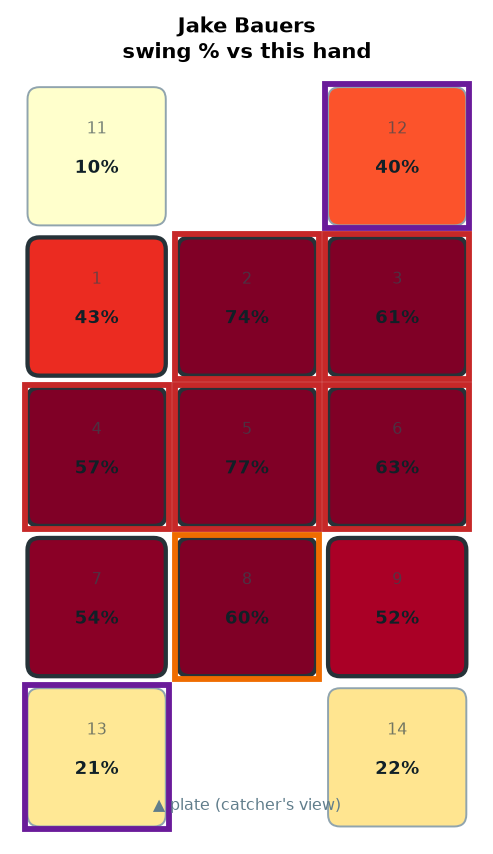
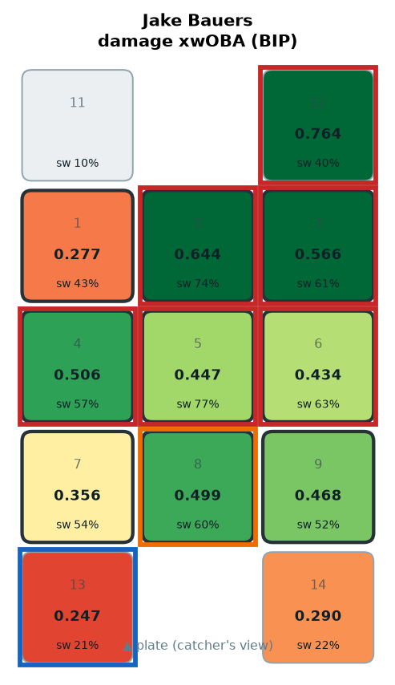
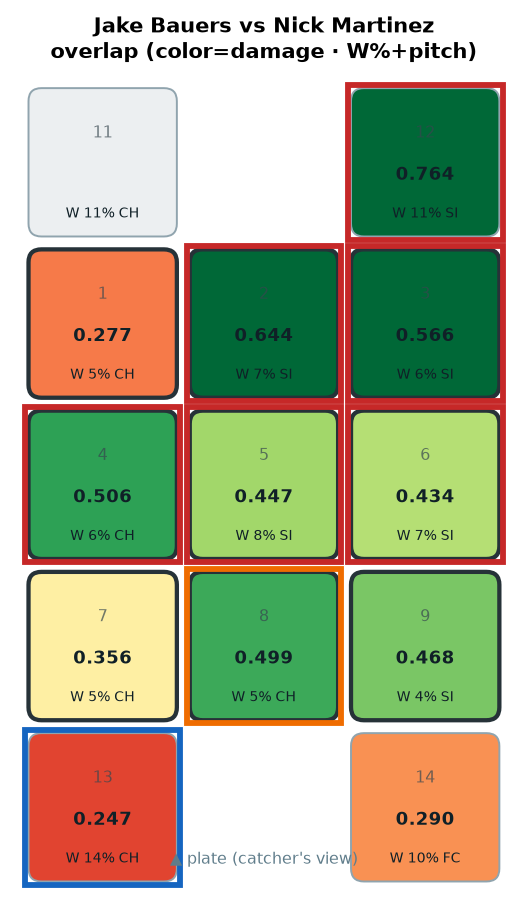
MISTAKE on OUT-DN-3B (W 13.8% · swing 21.3%) — COLD/take on dump OUT-DN-3B; HOT in-zone HEART/HI-MID
CONFIRM HOT HEART ← mainly SI (W 8.1%) · HOT OUT-UP-1B ← mainly SI (W 11.5%) · HOT HI-MID ← mainly SI (W 6.8%) · HOT HI-AWAY (1B) ← mainly SI (W 6.2%)
CONFIRM HOT HEART · HOT OUT-UP-1B · HOT HI-MID · HOT HI-AWAY (1B)
Garrett Mitchell

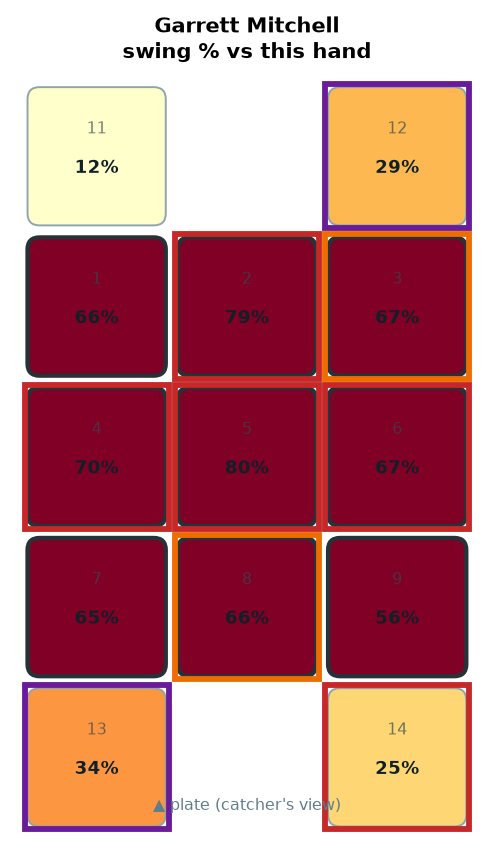
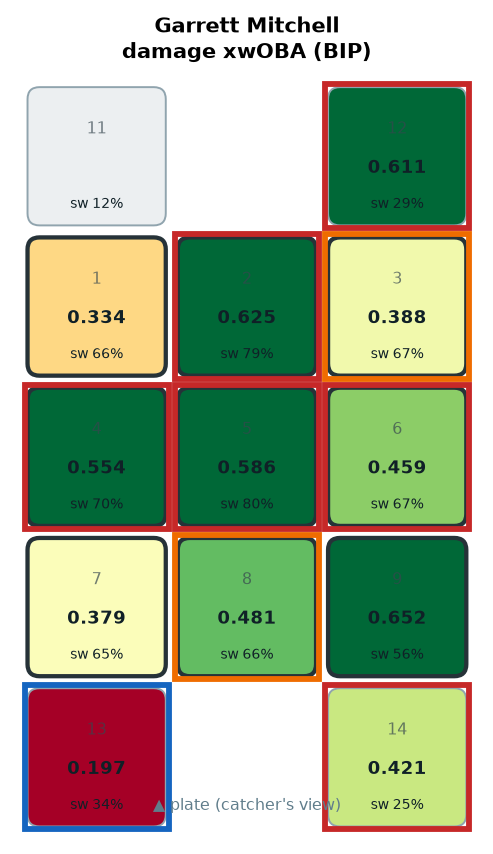
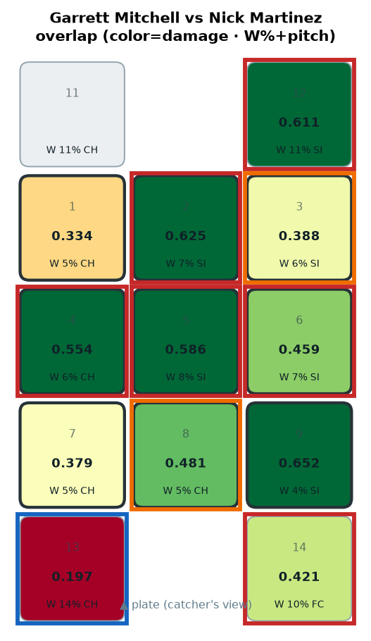
MISTAKE on OUT-DN-3B (W 13.8% · swing 33.9%) — COLD/take on dump OUT-DN-3B; HOT in-zone MID-IN/LO-MID
CONFIRM HOT MID-IN ← mainly CH (W 6.3%) · HOT OUT-UP-1B ← mainly SI (W 11.5%) · HOT HEART ← mainly SI (W 8.1%) · HOT OUT-DN-1B ← mainly FC (W 10.3%)
CONFIRM HOT MID-IN · HOT OUT-UP-1B · HOT HEART · HOT OUT-DN-1B
Jackson Chourio

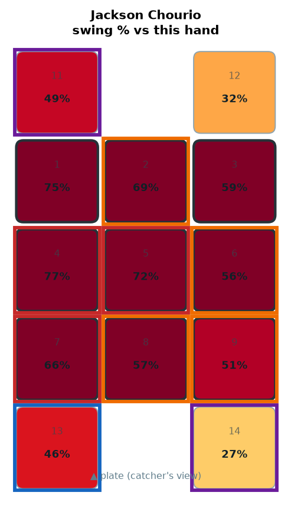
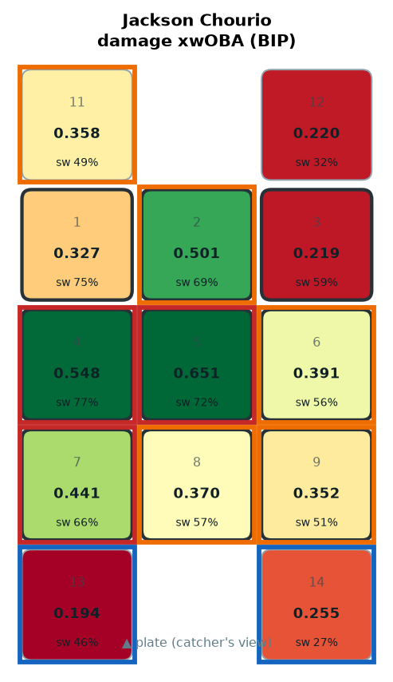
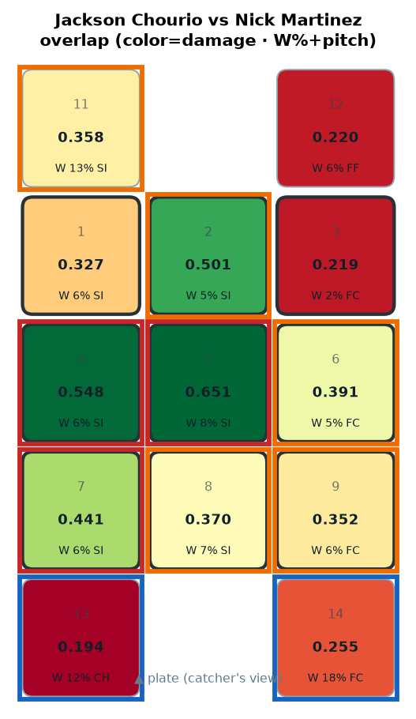
MISTAKE on OUT-DN-1B (W 17.9% · swing 26.6%) — COLD/take on dump OUT-DN-1B; HOT in-zone HEART/MID-IN
HOT HEART ← mainly SI (W 7.7%) · COLD OUT-DN-1B ← mainly FC (W 17.9%) · HOT MID-IN ← mainly SI (W 6.2%) · HOT LO-IN ← mainly SI (W 6.0%)
HOT HEART · COLD OUT-DN-1B · HOT MID-IN · HOT LO-IN
Brice Turang

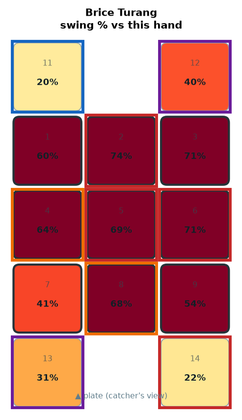
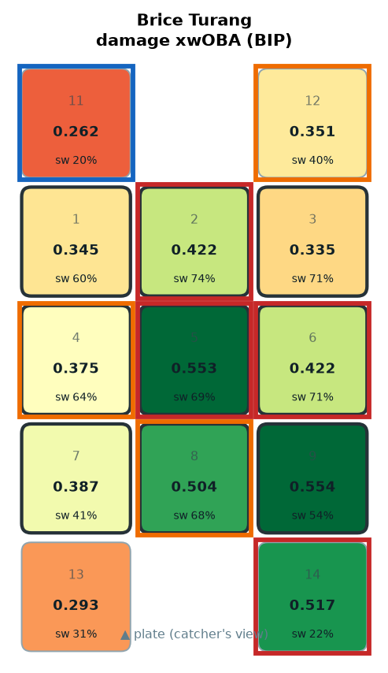
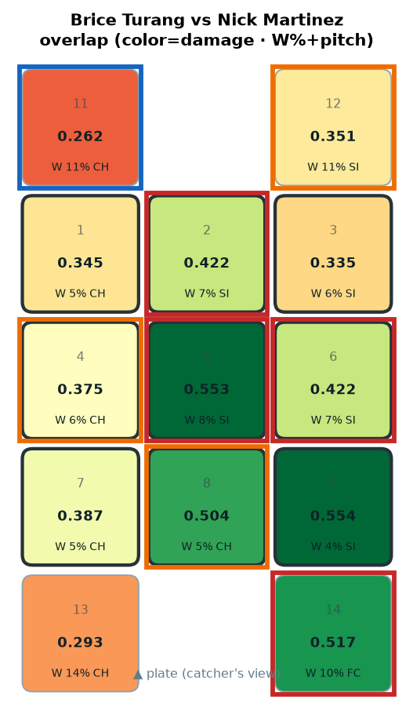
MISTAKE on OUT-DN-3B (W 13.8% · swing 31.2%) — COLD/take on dump OUT-DN-3B; HOT in-zone LO-MID/MID-IN
HOT OUT-DN-1B ← mainly FC (W 10.3%) · HOT HEART ← mainly SI (W 8.1%) · HOT MID-AWAY ← mainly SI (W 7.1%) · COLD OUT-UP-3B ← mainly CH (W 10.9%)
HOT OUT-DN-1B · HOT HEART · HOT MID-AWAY · COLD OUT-UP-3B
William Contreras
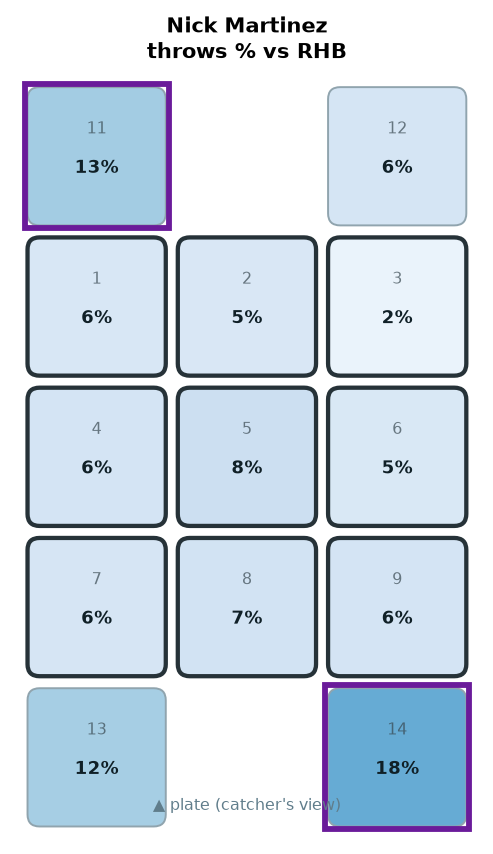
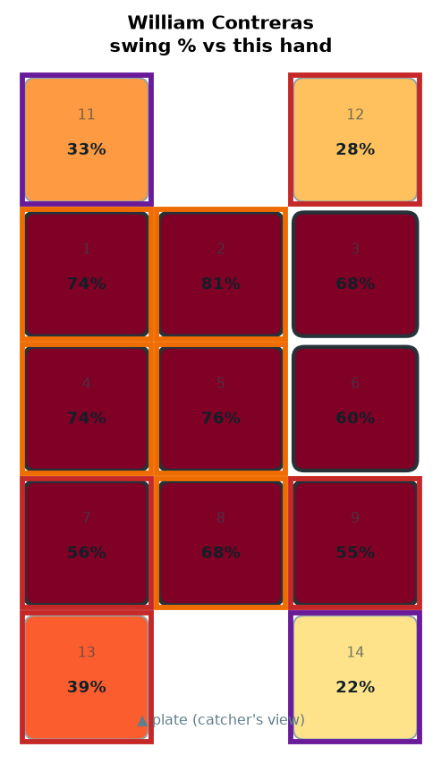
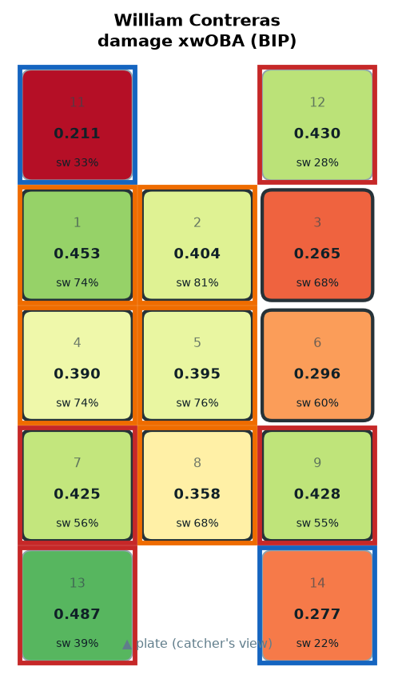
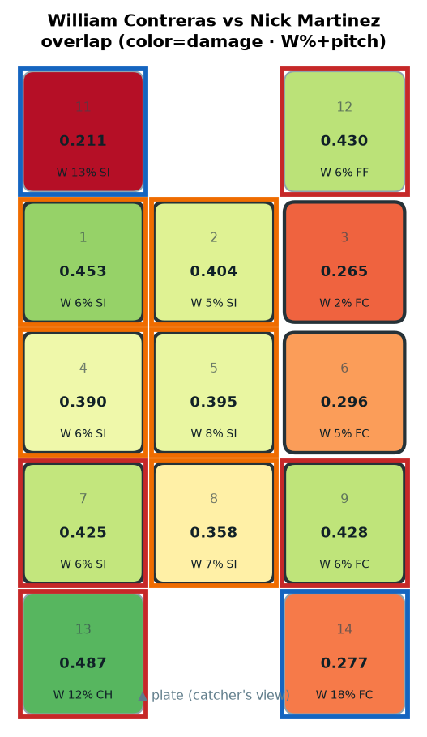
MISTAKE on OUT-DN-1B (W 17.9% · swing 22.5%) — COLD/take on dump OUT-DN-1B; HOT in-zone HEART/LO-AWAY
HOT OUT-DN-3B ← mainly CH (W 12.2%) · CONFLICT COLD OUT-DN-1B→HOT ← mainly FC (W 17.9%) · HOT LO-AWAY ← mainly FC (W 6.2%) · COLD OUT-UP-3B ← mainly SI (W 12.6%)
HOT OUT-DN-3B · CONFLICT COLD OUT-DN-1B→HOT · HOT LO-AWAY · COLD OUT-UP-3B
Cooper Pratt

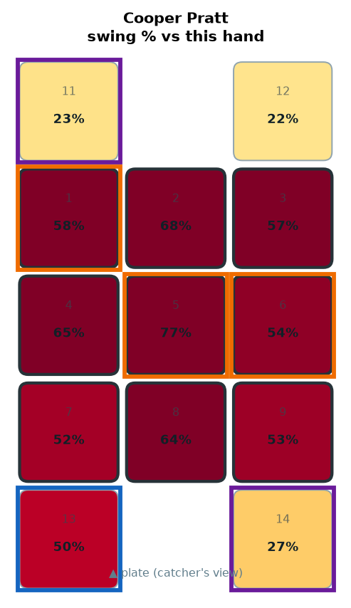
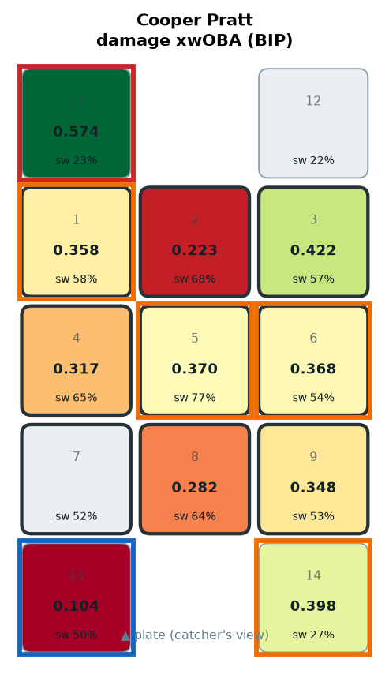
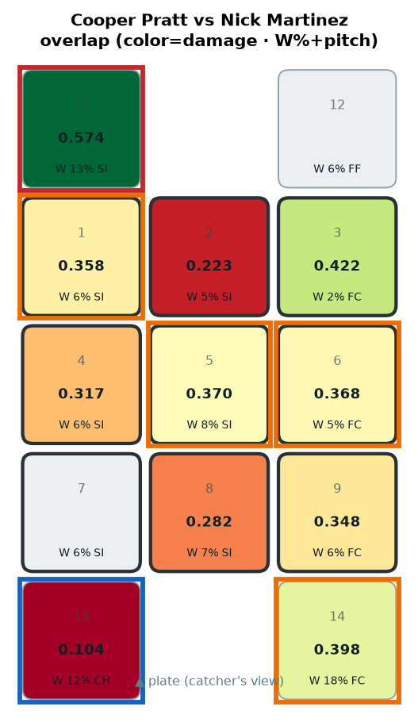
TUNNEL on OUT-DN-1B (W 17.9% · swing 26.7%) — damages his dump OUT-DN-1B (W 17.9% FC+CH)
COLD OUT-DN-3B ← mainly CH (W 12.2%) · HOT OUT-UP-3B ← mainly SI (W 12.6%)
COLD OUT-DN-3B · HOT OUT-UP-3B
Christian Yelich

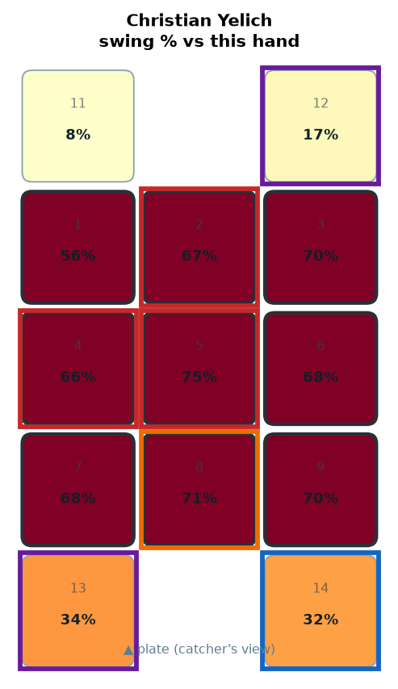
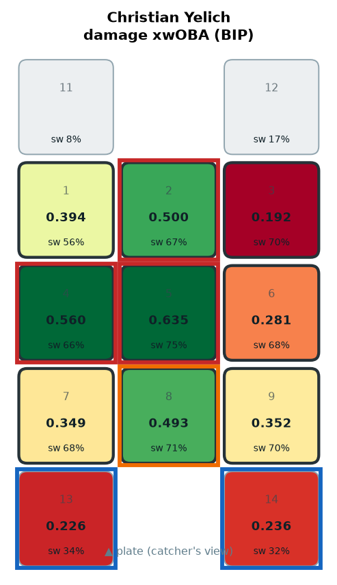
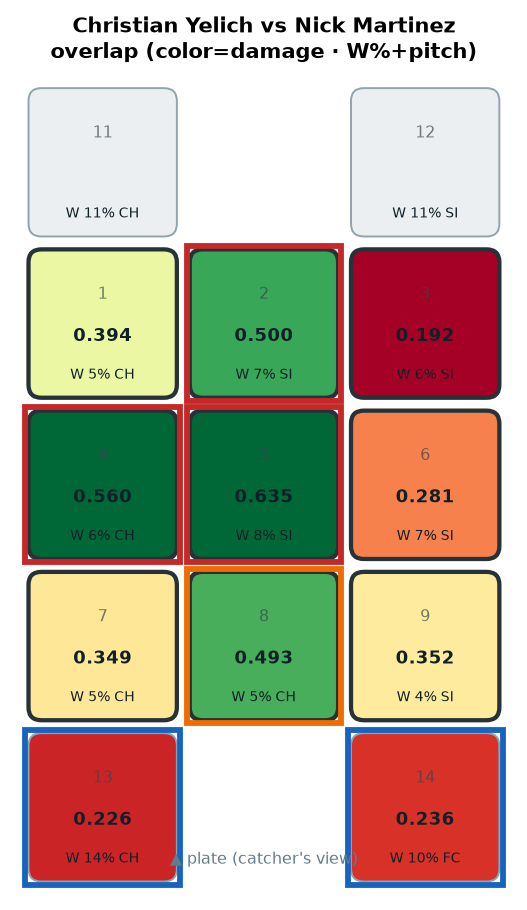
MISTAKE on OUT-DN-3B (W 13.8% · swing 33.5%) — COLD/take on dump OUT-DN-3B; HOT in-zone LO-MID/HEART
HOT HEART ← mainly SI (W 8.1%) · HOT MID-IN ← mainly CH (W 6.3%) · HOT HI-MID ← mainly SI (W 6.8%) · COLD OUT-DN-3B ← mainly CH (W 13.8%)
HOT HEART · HOT MID-IN · HOT HI-MID · COLD OUT-DN-3B
David Hamilton
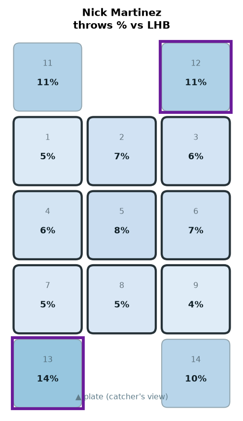
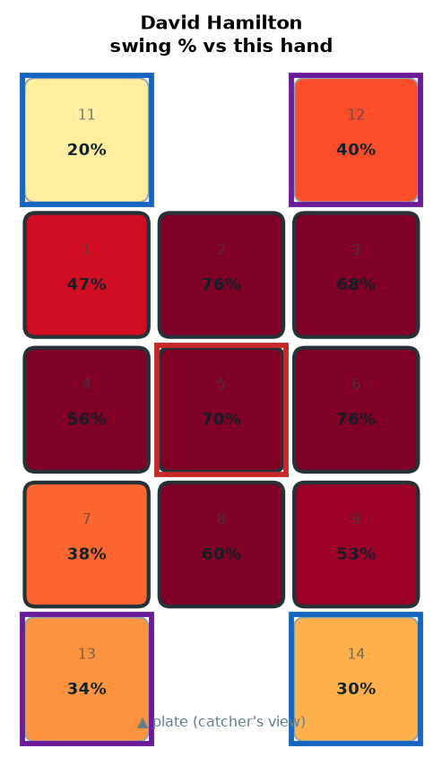
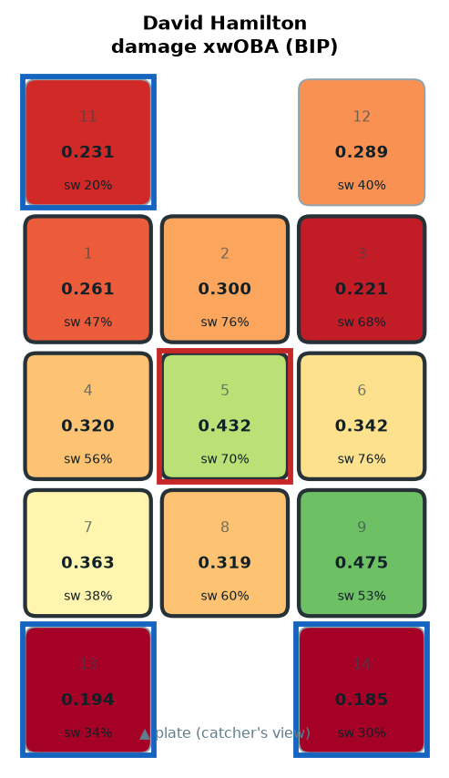
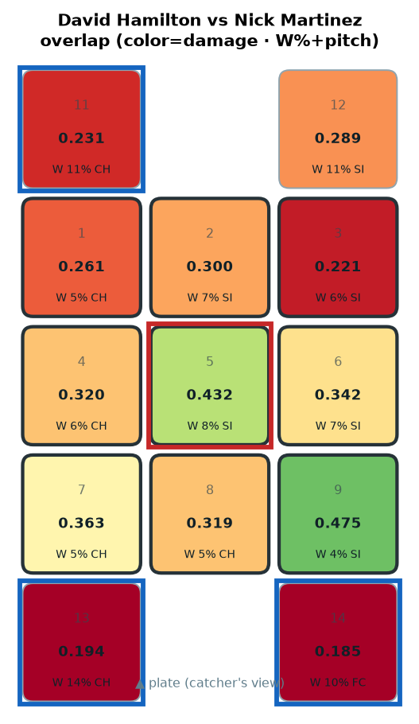
MISTAKE on OUT-DN-3B (W 13.8% · swing 34.1%) — COLD/take on dump OUT-DN-3B; HOT in-zone HEART
CONFIRM COLD OUT-UP-3B ← mainly CH (W 10.9%) · HOT HEART ← mainly SI (W 8.1%) · COLD OUT-DN-3B ← mainly CH (W 13.8%) · COLD OUT-DN-1B ← mainly FC (W 10.3%)
CONFIRM COLD OUT-UP-3B · HOT HEART · COLD OUT-DN-3B · COLD OUT-DN-1B
Sal Frelick

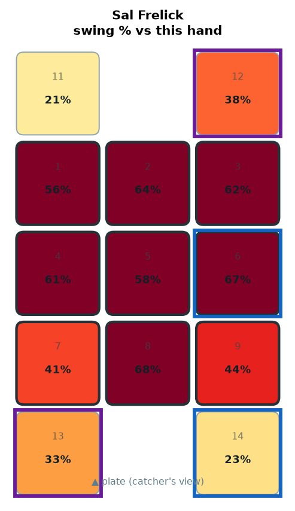
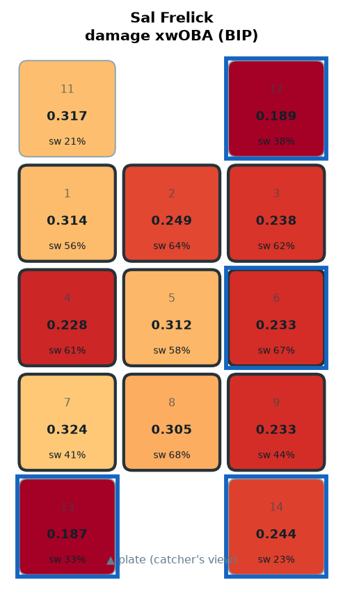
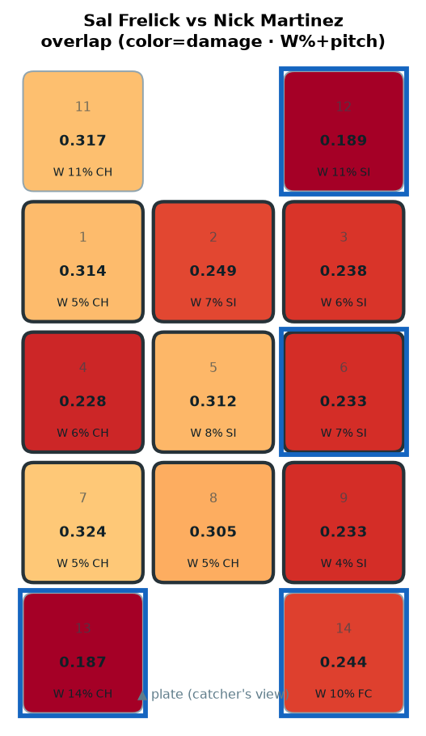
COLD on OUT-DN-3B (W 13.8% · swing 32.7%) — COLD on dump OUT-DN-3B — pass Hits vs this tunnel
COLD OUT-DN-3B ← mainly CH (W 13.8%) · COLD OUT-DN-1B ← mainly FC (W 10.3%) · COLD OUT-UP-1B ← mainly SI (W 11.5%) · COLD MID-AWAY ← mainly SI (W 7.1%)
COLD OUT-DN-3B · COLD OUT-DN-1B · COLD OUT-UP-1B · COLD MID-AWAY